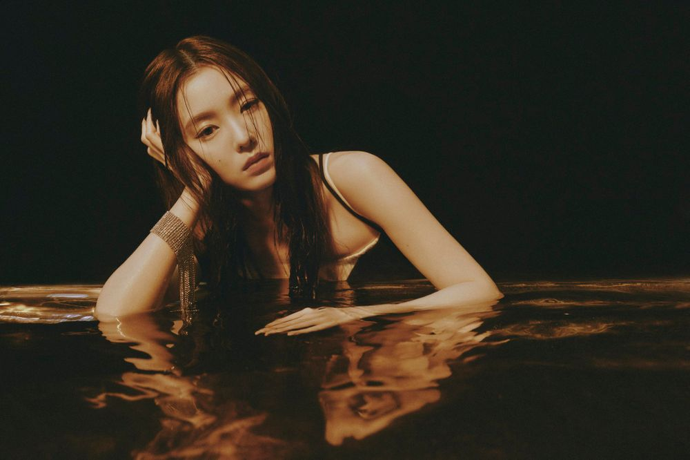
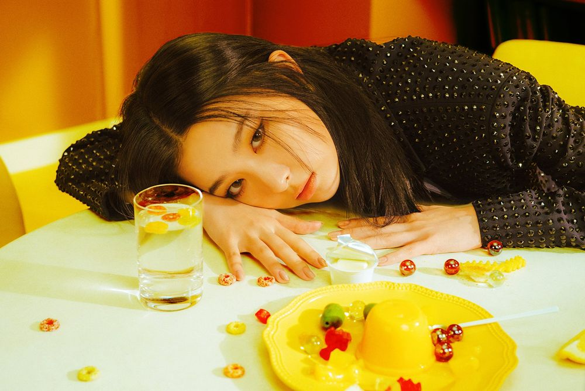
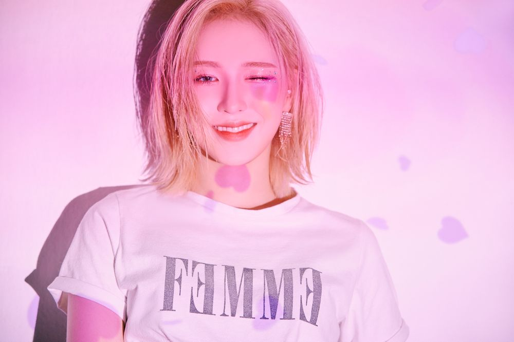
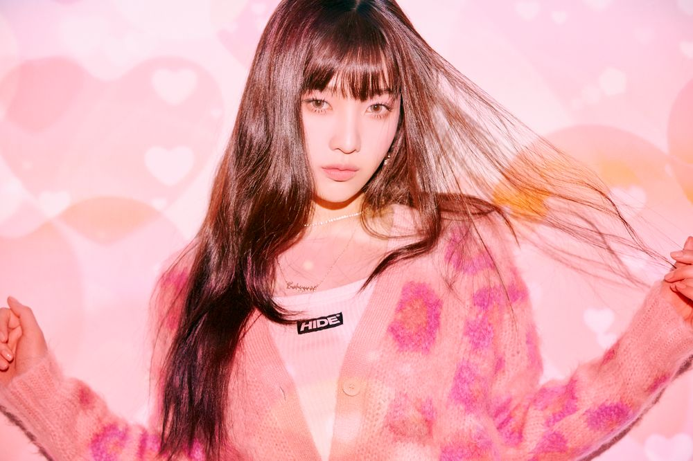
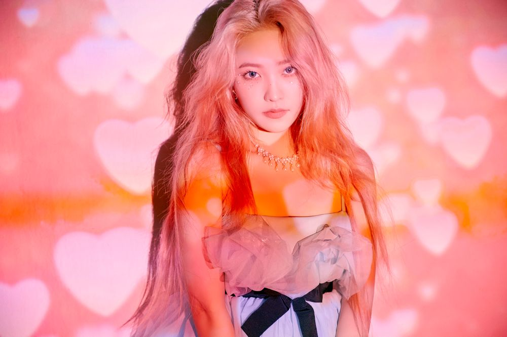

Red Velvet
Member
Album
- 행복(Happiness)
- Ice Cream Cake
- Dumb Dumb
- 7월 7일
- 러시안 룰렛
- Rookie
- 빨간 맛
- Bad Boy
- Power Up
- RBB
- 짐살라빔
- 음파음파
- Psycho
아이린(IRENE)

본 명 배 주 현
출 생 1991년 03월 29일
포지션 센터, 리더, 메인래퍼, 서브보컬, 리드댄서
소속사 SM엔터테이먼트
별 명 배추, 엔딩요정, 배토끼
슬기(SEULGI)

본 명 강 슬 기
출 생 1994년 02월 10일
포지션 리드보컬, 메인댄서
소속사 SM엔터테이먼트
별 명 곰돌이, 곰슬기, 갭신갭왕
웬디(WENDY)

본 명 손 승 완
출 생 1994년 02월 21일
포지션 메인보컬, 래퍼
소속사 SM엔터테이먼트
별 명 완이
조이(JOY)

본 명 박 수 영
출 생 1996년 09월 03일
포지션 서브보컬, 리드래퍼
소속사 SM엔터테이먼트
별 명 둥둥이, 셩이
예리(YERI)

본 명 김 예 림
출 생 1999년 03월 05일
포지션 서브보컬, 서브래퍼
소속사 SM엔터테이먼트
별 명 림이, 예부기